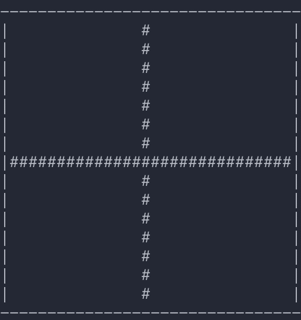

The universe of the Game of Life is an infinite, two-dimensional orthogonal grid of square cells, each of which is in one of two possible states, alive or dead, (or populated and unpopulated, respectively). Every cell interacts with its eight neighbours, which are the cells that are horizontally, vertically, or diagonally adjacent. At each step in time, the following transitions occur:
Source: Wikipedia

# Conway's Game of Life Program
# A system of cells that liv on a grid,
# where they live and die, and also evolve
# based on rules that dictate their world.
import numpy as np
from os import name, system
from time import sleep
from start_state import toad, cross, three_lines, solid_square
def dead_state(height=5, width=5):
# Create a board of declared width and height
# with all cells initialized to dead.
state = np.zeros((height, width), dtype=int)
return state
def random_state(height=5, width=5):
# state = dead_state(width, height)
s = (height, width)
state = np.random.sample(size=s)
for row in state:
for i, num in enumerate(row):
if num >= 0.5:
num = 0
else:
num = 1
row[i] = num
return state.astype(int)
# determines if a singles cell's 8 neighbors are 'live'
def live_neighbors(state):
live_count = 0
cell = state[1][1]
for row in range(3):
for col in range(3):
if state[row][col] == 1:
live_count += 1
if cell == 1:
return live_count - 1
else:
return live_count
# wrap a board state in a 'circle' to
# elimate errors when finding edge cell neigbors.
# only accepts numpy.ndarrays
def zero_wrap(state):
state = state.tolist()
new_row = [0 for col in range(len(state[0]) + 2)]
for row in state:
row.insert(0, 0)
row.append(0)
state.insert(0, new_row)
state.append(new_row)
return np.array(state)
def new_cell_state(cell_neighbors):
cell = cell_neighbors[1][1]
nbrs_on = live_neighbors(cell_neighbors)
if cell == 1 and (nbrs_on == 2 or nbrs_on == 3):
new_cell = 1
elif cell == 0 and nbrs_on == 3:
new_cell = 1
else:
new_cell = 0
return new_cell
def get_next_state(current_state):
cs_rows, cs_cols = np.shape(current_state)
next_state = dead_state(cs_rows, cs_cols)
wrapped_state = zero_wrap((current_state))
ws_rows, ws_cols = np.shape(wrapped_state)
for row in range(1, ws_rows - 1):
for col in range(1, ws_cols - 1):
cell_neighbors = wrapped_state[row - 1 : row + 2, col - 1 : col + 2]
new_cell = new_cell_state(cell_neighbors)
next_state[row - 1][col - 1] = new_cell
return np.array(next_state)
# take a grid of cell states & render a board with ascii char
def render(state, on_str="#", off_str=" "):
border = "-" * len(state[0])
print("-" + border + "-")
for row in state:
row = [on_str if n == 1 else off_str for n in row]
row = "".join(str(n) for n in row)
print("|" + row + "|")
print("-" + border + "-")
return
# board_state = random_state(height, width)
# init_state = np.array(toad)
# init_state = np.array(three_lines)
init_state = np.array(cross)
# init_state = np.array(solid_square)
system("cls" if name == "nt" else "clear")
render(init_state)
sleep(2)
system("cls" if name == "nt" else "clear")
state = get_next_state(init_state)
next_state = get_next_state(state)
while not np.array_equal(next_state, state):
system("cls" if name == "nt" else "clear")
render(state)
sleep(0.1)
state = get_next_state(state)
next_state = get_next_state(state)